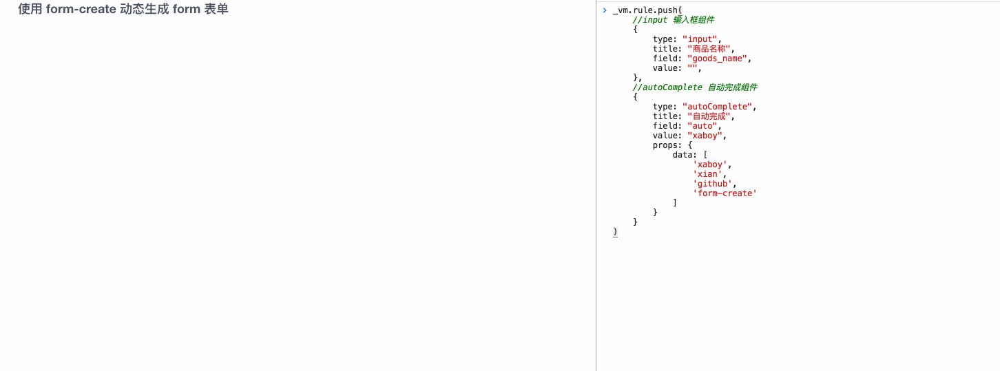
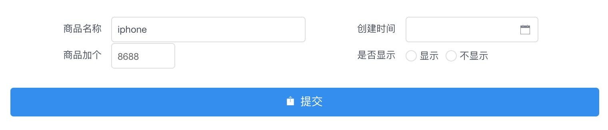
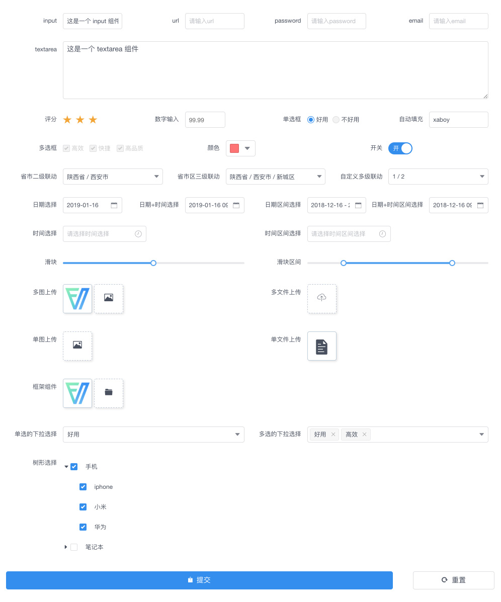

原文出处:本文由博客园博主xaboy提供。
原文连接:https://www.cnblogs.com/xaboy/p/11211138.html
原文连接:https://www.cnblogs.com/xaboy/p/11211138.html
介绍
form-create 是一个可以通过 JSON 生成具有动态渲染、数据收集、验证和提交功能的表单生成器。并且支持生成任何 Vue 组件。结合内置17种常用表单组件和自定义组件，再复杂的表单都可以轻松搞定。
演示项目: 开源的高品质微信商城
功能
-
自定义组件
- 可生成任何Vue组件
- 自带数据验证
- 轻松转换为表单组件
-
通过 JSON 生成表单
-
通过 Maker 生成表单
-
强大的API，可快速操作表单
-
双向数据绑定
-
事件扩展
-
局部更新
-
数据验证
-
栅格布局
-
内置组件17种常用表单组件
对比 1.x
-
速度更快
-
体积更小
-
更强大的全局配置
-
自定义组件更容易扩展
-
更容易支持第三方 UI 库
-
更少的 bug
示例
通过 JSON 创建表单 
通过 API 操作表单 
@form-create包说明
| 名称 | 说明 |
|---|---|
| @form-create/iview | iview 版表单生成器 |
| @form-create/element-ui | element-ui 版表单生成器 |
| @form-create/core | form-create 核心包 |
| @form-create/utils | form-create 工具包 |
| @form-create/data | 省市区多级联动数据 |
使用
以element-ui版本为例介绍如何在项目中使用 form-create
安装
npm i @form-create/element-ui
挂载
全局注册
import formCreate form '@form-create/element-ui';
Vue.use(formCreate);
局部挂载
import formCreate form '@form-create/element-ui';
export default {
components:{
formCreate:formCreaet.$form()
}
}生成表单
<template>
<form-create v-model="$f" :rule="rule" @on-submit="onSubmit"></form-create>
</template>
export default {
data () {
return {
//表单实例对象
$f:{},
//表单生成规则
rule:[
{
type:'input',
field:'goods_name',
title:'商品名称'
},
{
type:'datePicker',
field:'created_at',
title:'创建时间'
}
]
};
},
methods:{
onSubmit(formData){
//TODO 提交表单
}
}
};
效果

实例对象 $f
可以通过 $f 快速操作表单，例如：
$f.hidden：隐藏指定组件$f.validate：验证表单$f.setValue：修改表单组件的值$f.append：追加表单组件
自定义组件
生成
通过标签生成
{
type:'el-button',
name: 'btn',
props:{
type:'primary',
field:'btn',
loading:true
},
children:['加载中']
}
通过模板生成
{
type:'template',
name:'btn'
template:'<el-button :loading="loading">{{text}}<el-button>',
vm: new Vue({
data:{
loading:true,
text:'加载中'
}
})
}
转换为表单组件自定义组件转换为表单组件后，可通过$f.formData,$f.getValue,$f.setValue,$f.disabled等方法快速操作组件，达到和内置组件相同的效果
预定义
props
在自定义组件内部通过props接收一下属性
value表单的值disabled组件的禁用状态
例如:
vm = Vue({
props:{
value:String,
disabled:Boolean
}
})
input 事件
通过input事件更新组件内部的值
当组件值发生变化后,通过 input 事件更新值.例如:
vm.$emit('input',newValue);
挂载自定义组件
要生成的自定义组件必须通过Vue.component方法挂载到全局,或者通过formCreate.component方法挂载
例如:
formCreate.component('TestComponent',component);
或者
Vue.component('TestComponent',component);
生成
表单组件必须定义field属性
JSON
{
type:'TestComponent',
value:'test',
field:'testField',
title:'自定义组件'
}
Maker
formCreate.maker.create('TestComponent','testField','自定义组件').value('test')
示例
自定义计数器按钮组件,获取按钮点击数.该组件的功能和内置组件相同
formCreate.maker.template('<el-button @click="onClick" long :disabled="disabled">计数器-{{num}}</el-button>', new Vue({
props:{
//预定义
disabled:Boolean,
value:Number,
},
data: function () {
return {
num: this.value,
}
},
watch:{
value(n){
this.num = n;
}
},
methods: {
onClick: function () {
this.num++;
//更新组件内部的值
this.$emit('input',this.num);
},
},
}), 'tmp', '自定义 title').value(100).props('disabled',false)
完整示例
